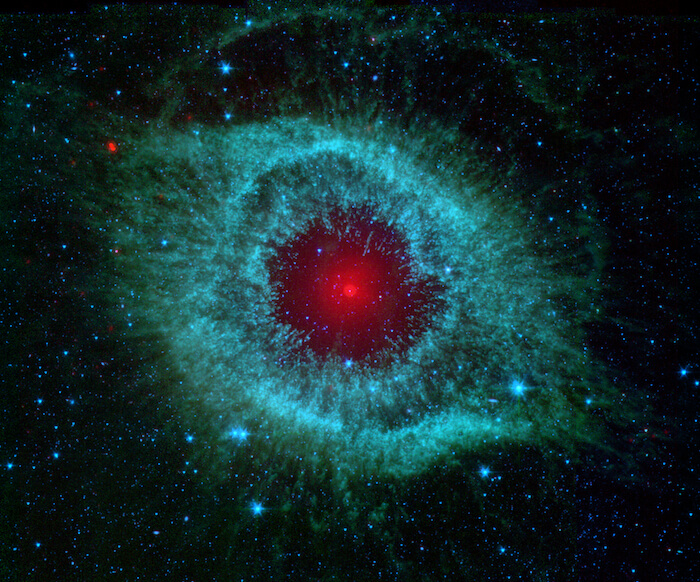
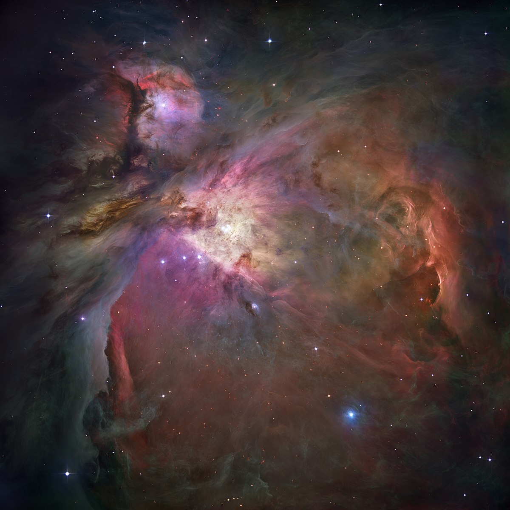

Sistema Solar
¿Qué es un sistema solar?
Es un sistema planetario como el nuestro, que tiene planetas orbitando alrededor de una estrella principal. Nuestro sistema planetario se llama "sistema solar" porque usamos la palabra "solar" porque así nos referimos a nuestra estrella anfitriona Sol.
Nuestro sistema solar consta de nuestra estrella, el Sol, y todo lo que atraído a él por la fuerza de la gravedad: los planetas Mercurio, Venus, la Tierra, Marte, Júpiter, Saturno, Urano y Neptuno; planetas enanos,lunas y millones de asteroides, cometas y meteoroides. Más allá de nuestro propio sistema solar, se han descubierto miles de sistemas planetarios que orbitan alrededor de otras estrellas en la galaxia Vía Láctea.

Cosas que debemos saber
- Nuestro sistema solar está compuesto de estrellas, ocho planetas e incontables cuerpos pequeños como planetas enanos, asteroides y cometas
- Orbita el centro de la Vía Láctea, una galaxia espiral, a 828.000 kilómetros por hora y estamos ubicados en uno de sus cuatro brazos espirales
- Le toma 230 millones de años completar una orbitar alrededor del centro galáctico
- Nuestro sistema solar es una región del espacio, no tiene atmósfera pero contiene algunos mundos, incluyendo nuestro planeta, con varios tipos de atmósferas distintos
- Los planetas del sistema solar e incluso algunos asteroides tienen más de 200 lunas en su órbita
- Tiene 4 planetas gigantes y al menos un asteroide que tiene anillos pero ninguno es tan espectacular como los anillos de Saturno
- Más de 300 sondas espaciales han explorado destinos más allá de la órbita terrestre, incluyendo 24 astronautas que han hecho un viaje de la Tierra a la Luna
- Nuestro sistema solares el único conocido que puede albergar vida en la Tierra, aunque se siguen buscando más donde sea
- Voyager 1 y 2 son sondas espaciales que han abandonado nuestro sistema solar. Otras 3 -Pioneer 10, 11 y New Horizons- eventualmente también ingresen al espacio interestelar.
Galaxias
Una galaxia es una enorme colección de gas, polvo, estrellas y sistemas solares unidos por la gravedad; que mayormente tienen un agujero negro supermasivo en el centro.

Nosotros vivimos en el planeta Tierra, parte de un sistema solar que se encuentra en una pequeña parte de una galaxia llamada Vía Láctea. Cuando miramos hacia el cielo durante la noche, podemos observar millones de estrellas que se encuentran en nuestra galaxia, y si tenemos la suerte de que sea un lugar muy oscuro también podemos ver el brazo espiral de la galaxia cruzando todo el cielo.
No podemos saber con exactitud cuántas son todas las galaxias del universo, pero el telescopio espacial Hubble pudo observar en una parte del espacio durante 12 días 10 mil galaxias de tamaños, formas y colores distintos.

Algunas galaxias son espirales como la nuestra, tienen brazos curvos y la forma de una rueda. Otras son ovaladas, reciben el nombre de elípticas; y también podemos encontrar galaxias irregulares que no tienen una forma marcada.

A veces suele pasar que se acercan mucho una a la otra y se terminan fusionando. Nuestra Vía Láctea se encuentra muy cerca de otra galaxia vecina llamada Andrómeda, pero no te preocupes, si esto llega a suceder, posiblemente no nos demos cuenta. Las galaxias son tan grandes que, por más que se acerquen demasiado, los planetas de los sistemas solares no se acercan ni tienen riesgo de colisionar.
Nebulosas
Las nebulosas son nubes gigantes de polvo y gas provenientes de explosiones de estrellas como supernovas, que se encuentran en el espacio; regiones donde las estrellas nacen.

El polvo y los gases de las nebulosas (helio e hidrógeno en mayor parte) están muy dispersos, pero la gravedad puede comenzar lentamente a acumularlos. A medida que estos cúmulos se hacen más y más grandes, su gravedad se vuelve más y más fuerte. Cuando esto sucede, colapsa por su propia gravedad haciendo que el material del centro de la nube se caliente y formándose así una nueva estrella.

Se encuentran en el espacio, entre las estrellas, conocido como “espacio interestelar”. La nebulosa más cercana a nosotros es Helix, el remanente de la muerte de una estrella probablemente muy parecida a nuestro sol a 700 años luz de distancia; esto quiere decir que su luz tarda 700 años en llegar a nosotros.
Los astrónomos usan telescopios muy poderosos para poder tomar imágenes de nebulosas, como el telescopio espacial Spitzer y Hubble quienes han capturado varias imágenes de nebulosas muy lejanas.
Estrellas
Las estrellas son los objetos astronómicos más reconocidos y son los bloques de construcción más fundamentales de todas las galaxias. La edad, la distribución y la composición de las estrellas de una galaxia pueden decirnos mucho acerca de su historia. Son responsables de la fabricación y distribución de todos elementos químicos como el carbono, el nitrógeno y el oxígeno. Estos objetos celestes nacen en las tan hermosas nebulosas.
Todas las estrellas tienen un ciclo de vida y, como nuestro Sol, se encuentran en lo que se llama secuencia principal. Estas estrellas requieren unos 50 millones de años para madurar desde su comienzo hasta la edad adulta. En el caso del Sol, permanecerá en esta fase madura durante aproximadamente 10 mil millones de años.
Las estrellas se alimentan de la fusión nuclear de hidrógeno para formar helio en lo más profundo de sus núcleos; la salida de la energía de las regiones centrales de la estrella es la que proporciona la presión necesaria para evitar el colapso de la estrella por su propio peso y energía que la hace brillar.
El Diagrama de Hertzsprung-Russell o diagrama HR, nos muestra que las estrellas de la Secuencia Principal abarcan una amplia gama de luminosidades y colores, pudiendo clasificarse de acuerdo a esas características. Las estrellas más pequeñas, enanas rojas, tienen tan solo el 10% de la masa del Sol y emiten sólo el 0,01% de su energía, brillando débilmente a temperaturas entre 3000-4000K. Son las estrellas más numerosas del Universo y tienen una vida de decenas de miles de millones de años. Por otro lado, las estrellas más masivas, hipergigantes, pueden ser 100 o más veces más masivas que el Sol y tener temperaturas superficiales de más de 30 000 K. Emiten cientos de miles de veces más energía que el Sol, pero tienen vidas de sólo unos pocos millones de años, son la minoría.

Cuando una estrella fusionó todo el hidrógeno de su núcleo, terminan las reacciones nucleares. Al no tener la energía necesaria para soportarlo, el núcleo comienza a colapsar sobre sí mismo y se vuelve mucho más caliente. El hidrógeno todavía se encuentra disponible fuera del núcleo, por lo que la fusión de hidrógeno continúa en ese lugar. El núcleo cada vez más caliente, empuja las capas externas de la estrella hacia afuera, se expanden y se enfrían, transformando a la estrella en una gigante roja.
Si la estrella es lo suficientemente masiva, el núcleo colapsado puede volverse lo suficientemente caliente como para soportar reacciones nucleares que consumen helio y producen una variedad de elementos más pesados como el hierro. Sin embargo, estas reacciones ofrecen solamente un alivio temporal porque gradualmente el núcleo se vuelve inestable, a veces ardiendo furiosamente, otras veces apagándose. Estas variaciones hacen que la estrella palpite y desprenda sus capas exteriores, envolviéndose en un capullo de gas y polvo. Lo que sucede a continuación depende del tamaño del núcleo:
- Las estrellas promedio se convierten en enanas blancas: Este es el caso de nuestro Sol, el proceso de expulsar sus capas externas continúa hasta que el núcleo queda totalmente expuesto. Esta ceniza muerta, muy caliente, es la que se llama White Dwarf. Este tipo de estrellas tienen aproximadamente el tamaño de nuestra Tierra a pesar de contener la masa de una estrella. La presión de los electrones que se mueven rápidamente evita que estas estrellas colapsen, cuanto más masivo es el núcleo, más densa es la enana blanca que se forma. Por lo tanto, cuanto menor es el diámetro de una enana blanca, ¡mayor es su masa! Las enanas blancas son muy débiles porque son muy pequeñas y, al carecer de una fuente de producción de energía, se desvanecen a medida que se enfrían gradualmente. Este es el destino de las estrellas con una masa de hasta aproximadamente 1,4 veces la masa de nuestro Sol.
- Por encima de 1,4 veces la masa del Sol, la presión de los electrones no puede soportar el núcleo contra un mayor colapso por lo que si está lo suficientemente cerca de una estrella compañera, su gravedad puede arrastrar materia, principalmente hidrógeno, desde las capas externas de esa estrella hacia sí misma, construyendo su capa superficial. Cuando acumula suficiente hidrógeno en la superficie, se produce una fusión nuclear, que hace que la enana blanca brille sustancialmente y expulse el material restante. En unos pocos días, el brillo se desvanece y el ciclo comienza de nuevo. A veces, las enanas blancas particularmente masivas pueden acumular tanta masa que colapsan y explotan por completo, convirtiéndose en lo que se conoce como supernova. En una nova, solo explota la superficie de la estrella. En una supernova, el núcleo de la estrella colapsa y luego explota.
- Las estrellas de secuencia principal de más de 8 masas solares están destinadas a morir en una explosión titánica llamada supernova .En las estrellas masivas, una serie compleja de reacciones nucleares conduce a la producción de hierro en el núcleo. Habiendo logrado el hierro, la estrella ha extraído toda la energía que puede de la fusión nuclear. La estrella ya no tiene forma de sostener su propia masa y el núcleo de hierro colapsa. En cuestión de segundos, el núcleo se encoge de aproximadamente 5000 millas de ancho a solo una docena, y la temperatura aumenta 100 mil millones de grados o más. Las capas exteriores de la estrella inicialmente comienzan a colapsar junto con el núcleo, pero rebotan con la enorme liberación de energía y son lanzadas violentamente hacia el exterior. Durante un período de días a semanas, una supernova puede eclipsar a toda una galaxia. Asimismo, en estas explosiones se producen todos los elementos naturales y una rica variedad de partículas subatómicas. En promedio, una explosión de supernova ocurre aproximadamente una vez cada cien años en la galaxia típica. Cada año se descubren entre 25 y 50 supernovas en otras galaxias, pero la mayoría están demasiado lejos para ser vistas sin un telescopio.